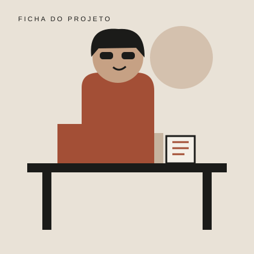

Sobre o projeto / 01
Uma boa leitura não tem prazo de validade.
A Segunda Leitura é uma proposta fictícia de catálogo de mangás e histórias em quadrinhos de segunda mão. A ideia une cultura, organização e consumo consciente em uma experiência digital simples.
Nossa proposta
Por que uma segunda leitura?
Muitos leitores acumulam volumes que já leram ou que não pretendem manter na coleção. Ao mesmo tempo, outras pessoas procuram justamente essas edições. Nosso site imagina uma ponte entre esses dois públicos.
Além de facilitar a busca por títulos, o catálogo demonstra como informações importantes — estado de conservação, preço e disponibilidade — podem ser apresentadas de maneira clara e organizada.
Princípio central: cada item deve ter uma descrição honesta. Marcas de uso fazem parte da história do exemplar, mas precisam ser informadas para que a pessoa escolha com segurança.
Como funciona
- Explore: consulte os títulos e filtre mentalmente por gênero, coleção ou faixa de preço.
- Confira: leia o estado de conservação e observe as informações de cada edição.
- Entre em contato: envie uma mensagem para perguntar sobre disponibilidade ou sugerir um título.
- Compartilhe: depois da leitura, cuide do volume para que ele possa seguir circulando.
O que observar em um exemplar usado
- Como novo: sem danos aparentes relevantes e com páginas bem conservadas.
- Bom: sinais leves de manuseio, sem comprometer a leitura.
- Com marcas: desgaste visível, anotado ou explicado na descrição.
Ficha acadêmica
Quem está por trás do site?

Equipe do projeto
Nome(s) do(s) aluno(s):Pedro Lucas Quintas Toledo e Heitor Sousa Palma
Disciplina: Construção de Páginas Web
Professor: Thiago Guimarães Tavares
Instituição: Instituto Federal do Tocantins — IFTO
Antes da entrega, substitua o campo de nomes pelos nomes completos de todos os integrantes.